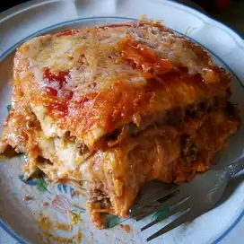

Lasagna recipe

Mexican lasagna
Ingredients:
This is an easy lasagna recipe that anyone can make!
- 1 pound lean ground beef
- 1 ounce package taco seasoning mix
- 14 ounce can peeled and diced tomatoes with juice
- 10 corn tortillas
- 1 cup prepared salsa
- 1/2 cup shredded colby cheese
Steps:
- preheat oven to 350 degrees F
- In a large skillet over medium-high heat, brown the ground beef,
and stir in the taco seasoning and tomatoes.
Line a 9x13-inch baking dish with half the tortillas.
Spoon the beef mixture into the dish, then top with the remaining
tortillas. Spread salsa over the tortillas and sprinkle with the cheese.
- Bake at 350 degrees F (175 degrees C) for 20 to 30 minutes,
or until cheese is melted and bubbly